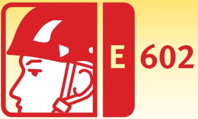
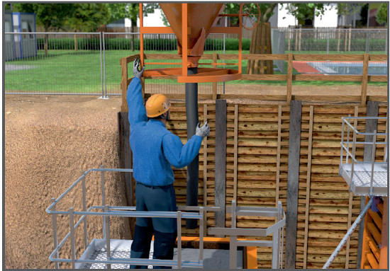
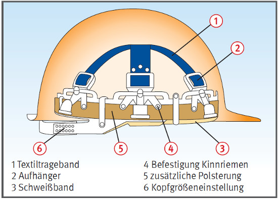
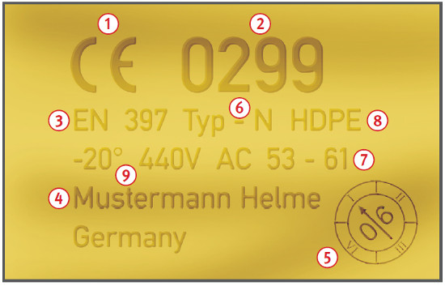

Kopfschutz
|
 |

Beispiel für einen Industrieschutzhelm nach EN 397


| Bezeichnung | Kurzzeichen |
| Polyethylen, Hart Polyethylen (High Density) | PE, HDPE |
| Polypropylen | PP |
| glasfaserverstärktes Polypropylen | PP-GF |
| glasfaserverstärktes Polycarbonat | PC-GF |
| Acrylnitril-Butadien-Styrol | ABS |
| Bezeichnung | Kurzzeichen |
| faserverstärktes Phenol-Formaldehyd-Harz | PF-SF |
| glasfaserverstärktes ungesättigtes Polyesterharz | UP-GF |
Optionale Anforderungen:
07/2021